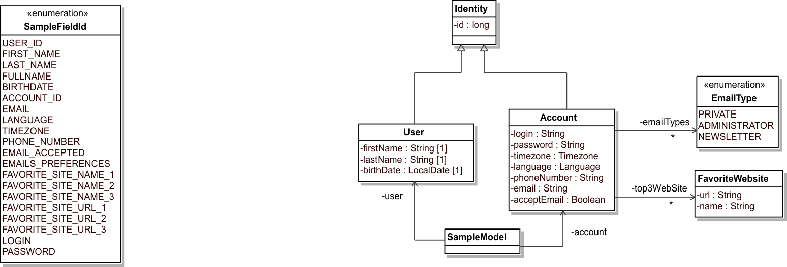

Gilles DI GUGLIELMO - Julien BAUDRY
https://github.com/jubaudry/model-map
Java Developer since 1999
Architecte chez LesFurets.com
Java Developer since 2007
Architecte chez LesFurets.com
TODO : sans field id
code difficile à lire pattern répétitif source d'erreur

TODO : avec field id + java enum


TODO : déclaration des fields
TODO : avec le cas de l'héritage et des constraintes sur les paths
TODO : déclaration d'annotations pour tagger le domain model
TODO : exemple de domain model taggé
TODO : annotation répétables Java 8
TODO : déclaration de la code génération
TODO : exemple de plugin maven
TODO : description des pattern du code généré
TODO : Schéma architecture
TODO : Model comme map clé-valeur
TODO : Stream, performance